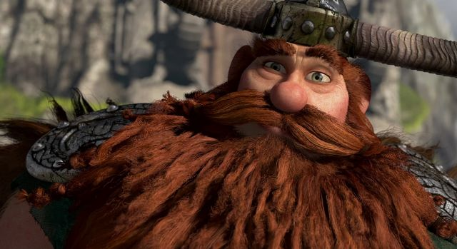

This character is the chief of Berk, he has always taken pride in being a chief and raising his son. how some of the characters describe him is unmovable and strong he has apparently popped a dragons head off when he was just a kid. His wife is Valka and his son is Hiccup. He has defeated the most fearsome Dragons and lead battles against the dragons instead of hiding behind hi troops. He was not able to save his wife from being taken from the dragons and has regret it for his life. His pride for a long time made him closeminded to change and listening to any point of view that was different then his own till his son some how was able to help him change. His son is very important to him. His son has helped Stoick learn to train a dragon of his own and helped him learn that he didn’t need to fear dragons as much as he should. Then when he learned to trust more, Stoick decided to become a reformed dragon fighter.
Valka Haddock, Hiccup Haddock, Astrid, Gobber, Snotlout, Ruffnut and Tuffnut, Fishlegs, Eret, Toothless, entirety of berk,
Is a Strong leader, Brave, Tough, Courageous, Daring, Bold, Kind, Loving, Caring, Inspiring, Outgoing, Has unbelievable Strength, Extraordinary combat skills, head strong,
“Your mom was the only woman for me. She was the love of my life. But with love comes loss, son. It’s part of the deal. Sometimes it hurts, but in the end, it’s all worth it. There’s no greater gift than love.” – Stoick from how to train your dragon
https://howtotrainyourdragon.fandom.com/wiki/Stoick_the_Vast_(Franchise)
https://parody.fandom.com/wiki/Stoick_The_Vast
https://howtotrainyourdragon.fandom.com/wiki/Stoick_the_Vast_(Franchise)